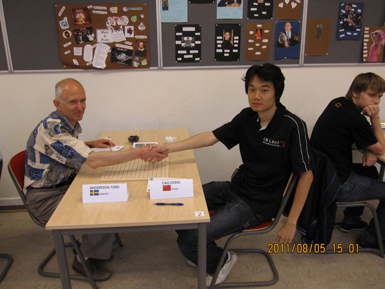
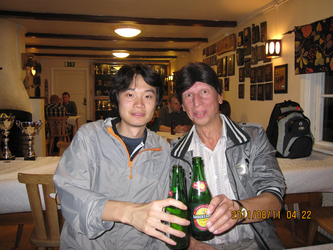

#2 Re:荣耀瑞典 作者：小红眼镜 发表时间：2011-8-18 12:40:41
8月5日9:00，第3轮比赛正式开始，我对阵瑞典老将Andersson，这是我在国际比赛中第一次与他交手，他是位值得尊重的棋手，棋龄长达30多年，而且曾经靠实力打进过AT,最著名的要算是曾经在AT比赛中阻击过苏切，直接导致后者当年未能夺冠，而且他昨天还赢了强大爱伏，所以决不能小视。

安德森开局，他开出了金星，要求4个打点，天呢，我当时不知是喜是悲了，难道又有不信邪的，来那个5么？，我未交换，他很快的给出了4个5，不过没打前两盘同样的5，在f7和i10两个打点上，我权衡了下，还是选择了自己比较熟悉的i10,白6最强防，实战黑7有些意外，实战7目前认为白接近必胜了，只有花月通盘端金星的那个变化时，黑才多选择实战的7，那样是黑好，白由于盘端问题在角落是杀不掉的（见参考图1），而实战7多下在i9和h10，黑还是可战的。白8最强，实战黑9他长考了很久，看来他并不熟悉这个白8的后续变化，长考后，他还是下出了正确的黑9唯一防（去年世团赛我对长谷，他也是长考后下出了正确的9）。白10后，他还是下出了最顽强的11，但黑13最后唯一的机会没有抓住，这里13最强应该下在k7，这样可利用做v形状迫使白需要补一手，这样白想赢就需要漫长的过程。实战13后，我很快应对了白14，在国内时已研究出白14必胜了，黑有最顽强的下法，但最后白棋可以通过多线连接来取胜，大概变化见参考图2。但实战的15确选择了与白棋对攻，这下我可乐了，因为我记得在国内拆棋的时候留意过这个15后的白胜法，只要后面细心去地毯就可以，等于是知道了白胜得结论，然后去验证走出就可以了。实战16我下的也很快，因为白想赢只有先活这个3，活另外的3顺序是错的，黑胜。实战如果17防k6那么白联系攻击vct(见参考图3)。安德森想必也是算到了这个vct 支持 这个午饭吃的够久的 快继续呀~ 8月6日上午9:00,第五轮比赛正式开始，我的对手卫冕冠军，俄罗斯的Sushkov Vladimir，苏切得实力大家是有目共睹了，这是我与他的第3次交锋了，前两次我都是我胜，心里上并不下风，而且这次苏切的准备也相当充分，俄慢积分长期排名第一，对局也很有质量。 这盘棋他开局，他很快出开出云月，要求4打，我并不意外，因为众所周知苏切对云雨月的研究很深，还写过这方面的杂志，实战他开云月，而没有选择雨月，我多半猜出了他要下的变化（和此前林皇宇对冈部宽一个变化），另外的3个打点黑基本必胜，而剩下的几个4打，多认为白相对较好防住，所以实战云雨月被交换的概率很小。 实战的5很流行，另外k9黑也可战，白6活3公认的最强防，黑7唯一，否则白可利用抓禁发动联系做棋进攻取胜。白8强防，但赛后爱伏说，由于云月盘端短，白8也可以防在h7(后面爱伏对俄罗斯啊提米夫下了这样一盘，白胜)。实战到14已经是流行的定式，14后白有43胜，黑面临几个防点，我们一一看下，如果黑挡j7,那么白直接i10,黑无解，大家可以在下面拆解。如果黑防m8或n7（类似），那么白可有如下法，交换之后白好（见参考图1），我在爱五子棋论坛战也曾下过类似变化。那么只剩下实战的黑15，也是最好的15，有意思的是，如果换成是雨月的同型局面，那么这个黑15白必胜了（见参考图2），正式由于云月的盘端少一路，白正好不能杀，如果白像参考图2那样强做棋，黑棋反倒杀了。16只得回防，17通常i10常见，双方互相纠缠。但实战苏切很快下出实战的17，有备而来，这时我顿时感到很失策，因为记得这个17我的谱里应该有介绍，苏切明明云雨月很强，昨天晚上居然忘了复习，实在很懊恼。 by:web版 上午的比赛消耗了太多体力，结束时已经2点多了，赶紧去吃饭的地方，只剩下些残羹冷炙了，无所谓了，反正也没什么食欲，可能是太疲劳和兴奋了，随便吃了几口，又吃了几块巧克力，在长椅上趟了一会儿，就算休息了（下午比赛果然出现体力问题）。下午15:30第六轮比赛正式开始，我的对手是日本的珠王冈部宽。 我开局，算是老对手了，第4次与他交锋，前3次2胜1和，冈不宽可以算是现在日本棋界的顶梁了，不光是下棋，还参与很多五子棋的组织和宣传工作。棋风一向是认真严谨，秉承了日本连珠的传统，而且每次比赛发挥都很稳定，基本都能从qt打进at。赛后他和黄金贤还调侃说自己说draw maker（和棋制造者），这次还真的被make了。。。 这盘棋其实是没有什么准备的，所以找了个自己熟悉的开局，此前也开过，我开出了残月局，要求4个打点，他交换，白4最强，他给出的第4个5手2打点，我并不奇怪，也许都怕中国人的研究了，没人敢下通金星的5了。我迅速留下实战的5，进入定式阶段，这个5不算是新招了，日本的老谱中就有很多记载了，上届的世锦赛我也曾执白下过一盘。白6，白8唯一防，黑9也有反挡的变化，但个人感觉黑不是很好（见参考图1）。 一直到15都是很基本定式结构，双方下的很快，16还有k7的下法，这是后来翻谱看到的，据说比实战的16好。17,18常见的交换，慢棋中也常看到。18后黑是可以在左上方展开攻击的，但实战19太稳健了，先处理掉白棋的素材。下到这里，和09年世锦赛我对kozhin的对局几乎一样，只不过kozhin19先在k10活了3。而当时白也是防在了j8这个要点，那么当时就考虑了下是否20挡掉k10,但斟酌了下后，发现这样的话黑在左上攻势依旧凌厉，不如还是下自己熟悉的j8,白20也只有这两个点可以下。冈部开始长考，我想他应该开始设计黑棋一长套的强攻了，此时黑棋确实可以攻的很猛，但白都有防，这是之前我也有所准备的（见参考图2）。 8月7号，这一天没有比赛，rif大会上午9点在比赛2楼的一个房间举行，大会持续了4个小时，除了一些例行投票外，主要确定了，2012年世团赛将在北京举行，采用山口规则，ants和petter都明确表示了会来北京，另外在10号比赛结束后，河村还向我透露了日本最有可能来华参赛的阵容：中村茂，长谷川一人，冈部宽，大角友希，另外还有两名替补待定。如果成行，将是中村大神首次来华，届时众多中国粉丝将一睹大神的风采！另外关于规则问题，将于2012年世团赛开会的时候讨论2012后将使用的规则，索索夫，塔拉山口都是比较有希望的，但日本有一票否决权，如他们不同意的话，那么还是山口。 中国的连换规则也在会上讨论，爱伏提出了一个如果黑1在天元，白2在边线，之后的发展，一方可以做充分准备的弊端，另外其他国家也不太赞同黑1放开天元，尤其是日本，坚持黑1在天元。那么我们的连换想成为比赛规则的话，可能还需要进一步改进。 大会结束已经快两点了，也没体力逛了，吃了饭直接回旅馆休息，第2天对林皇宇，他开，晚上看了看溪月，只能静等他出招了。 8月8日上午9:00,第七轮比赛正式开始，我的对手是中国台北棋手林皇宇，他开局，在正式比赛中，还是第一次与他过招，但之前在网上已经有过很多次对弈，林也参加了爱五子棋网的慢棋比赛，经常与大陆棋手在互联网上交流，可以说我们也是知己知彼，在研究上并不占优势，而且这次林发挥的也相当出色，六轮结束我们并列第一，而且这次他的准备公认为是最充分的，经过qt之后，现在的状态也调整的很不错了，所以这盘关系到最后的冠军走势，是一盘很艰苦的棋。 实战不出所料，林开出溪月局，要求8个打点，目前研究来说溪月8打黑还是很优的，而且这次被交互率很高，苏切还被逼的而开了一盘溪月 如6号的比赛如出一辙，结束时又已经2点了，同样很疲惫，午饭也是草草了事，西餐好像有点吃腻了，就这样带着疲惫的身躯来到下午的比赛。 下午15:30第八轮比赛正式开始，我的对手是俄罗斯的全国冠军Artemiev Sergey，我开局。这位棋手大家可能比较陌生，但是在网络的战绩以及在俄罗斯国内比赛的成绩都是非常好，第一轮还战胜了苏切，而且早在08年芬兰世团赛最后一轮时，我就是输给了他，而是中国遗憾的丢掉了冠军。所以同样是一场硬仗。 这盘的开局也没有做事先的准备，但看了他前几轮的对局后，发现他的攻击力并不是很强，而且他的用时很夸张，总是下了10个子左右，自己的时间就用的差不多，所以综合这些因素，我开出了蒲月局，要求五打，给他足够的优势，期待他攻崩，并且利用时间压迫他。 蒲月一般认为开6打合适，5打黑棋爆优，所以他很快就交换了，实战白4最强防，实战黑5公认为第5个黑强点，到白10双方都是最强下法，提一下，以前的一些对局中会找到很多8下在h7的下法，但目前研究认为黑必胜了（见参考图1）。如我所料，实战阿提米夫在黑11这手上就开始长考，我想他应该是考虑k9的下法，这个11在网战上也经常出现，黑棋也有很强的攻法（见参考图2），实战的11也很强，但他的时间已经用去一半了。。。12没有多想，最强防，在日本的比赛中，这个11,12的下法经常出现，记得中村执黑在09年世锦赛还下过13i8的变化，但我觉得实战长考后，阿提米夫下出的13真的很强，13意在控制，并把黑全盘的棋试图连接起来，而且13后，虽然黑没有任何活2眠3，但白的棋型更糟，任何攻击都会被黑棋直接牵制住的，所以只能乖乖防守了，14我并没有想太久，也是第一棋感，上下兼顾的防黑棋的进攻线路，并且利用做出的活2协助以后的防守和为反击做准备。 8月9日上午9:00，第九轮比赛正式开始，我的对手是中国台北的侯宜成，他开局。此前对这个对手一无所知，看了他qt和之前at的对局，行棋风格都比较本分，守强于攻，认真对待就好了。 开局他想了足有15分钟，开出了残月局，要求4个打点，他开了一个我想对熟悉的开局，当时猜测他想用通金星黑5和棋大定式搞和我，实战他给出的第4个5打点果然是通金星的5，不过我早已想好下此前提到过的另一个大分支的白6，这也是此前林皇宇战胜戴晓涵林使用的6，黑7下i8也是一个分支变化，但这次比赛这个7一次也没出现过，可见这个7黑优势并不是很大。实战到白10都是很流行的定式，黑11也可下在k7，但后续变化黑不是很优（见参考图1）。 实战12目前公认的最强防，13先在k10跳3也是可以的，这套变化我在爱五子棋慢棋网也下过（见参考图2），但黑的潜力也不是很大，所以只能说这个白6确实让黑棋头疼。14是必要的一手，攻守兼备，有意思的是一直到19是林和戴的复盘，当时林20防在了i8,但后来我们下面拆解的过程中发现，这个20后面还是有些强攻手段的，只是当时戴没有下出最强，于是我明白了侯给出这个5的用意，他应该是找出了针对20在i8的黑的好的下法，我临场想了实战的20，当时考虑由于白18的存在，黑在下方的威胁机会没有了，20在i10又彻底打断了黑在上方的好的连接，实战的20自己还是很满意。 21,22的交换后，黑优势还是不是很大。当时感觉23应该在左面开阔地带飘一手，然后去控全盘，但实战的23让我狂喜，感觉这个23太过于在局部纠缠了，搞不好黑会丢先，26之所以没有直接挡43，因为当时确定这盘黑已经不可能胜掉了，而今后白棋要想获胜的话，应该是在左面，所以下出了向左面积蓄力量的26，但实战 下午15:30第十轮比赛正式开始，我的对手是日本现役名人大角友希，我开局。 大角友希近几年进步也很快，更是坐上日本名人的宝座，近期比赛还战胜过中村茂，和其他日本棋手一样，作为新生代棋手的代表，大角也继承了日本传统的行棋风格，稳健而扎实。 09年世锦赛qt我们曾经有过交手，当时战和，对这盘棋的胜利非常渴望，一个是积分上可以甩开林皇宇，还可以击败现役日本名人，但貌似我也很保守，依然没有好的研究和准备了，于是又开出了残月，要求4个打点，这次大角考虑了良久才选择了交换，难道又想像冈部那样先手防么。。。 实战到白12与之前和冈部宽的对局完全一样，黑13变招了，我估计实战中这个13从来没有出现过，但来瑞典前在国内有朋友给我发过这个13，说黑不错，但没引起我的重视，所以现在只能现算了，但感觉防住黑棋问题不大，14，15后白上面是没有胜，上面的两个活2协助防守使用，或以后作为反击材料，16没有选择惯性的防守点e8,主要是怕黑f8活3后，下面肆意的做棋，实战的16后，迫使黑不敢在e8活3，因为那样的话，白有简单v抓33胜（见参考图1）。 实战的17很稳健，攻守兼备，大胆些的话也可下在h6,18或许有更好的防点，但实战18感觉更结实稳妥，19,20正常的攻防，20不能防i7，黑上面可以做出必胜型。但20后还是很担心的，因为黑下方有大把的空间，尤其是右下，当时想黑21下i8或k7都是不错的，但实战的21可能正体现了日本的棋手风格，也是在下方控盘，但还略带防守的味道，但感觉这颗子太靠下了，偏离了进攻中心。但21后白依然苦，因为没有好的做棋形状，只能防守。22到28的交换自认为还满意，以攻代守吧，29正常的占外势，30后白棋看似还 8月10日，收官大战于9:00正式开始，我的对手是爱沙尼亚的aivo,欧爱沃（还是中文名字亲切），又名爱伏，他开局。 爱伏应该是所有外国棋手里面对中国人来说最熟悉的，下面我们也是很好的朋友，爱伏曾在中国学习生活1年，还参加了08年全国锦标赛，并取得了第3名的好成绩，后无来者不敢说，外国人打中国的全国比赛是第一人了。现在他的中文水平也是非常不错，交流基本不成问题，这次在瑞期间也得到了他很多帮助，在这感谢下他。至于和他的交锋次数，确实记不住多少次了，大大小小比赛很多，输赢感觉参半吧，一直觉得他是个很有潜力的棋手，相信以后也会取得世界冠军。再说这次的比赛爱伏的比赛确实准备很充分，特别是在对阵苏切的比赛中，下出了惊世骇俗的花月通盘端金星的白8！导致后面花月对局骤然减少。而且爱伏应该是所有AT选手中用时最少的选手，这可能跟他下棋的习惯有关,虽然他前面打的成绩不太好，但面对这么一盘对他来说无任何压力的对局，很可能爆发出惊人的力量。我丝毫不敢怠慢。 实战爱伏开出溪月局，要求8个打点，溪月也是他最熟悉的开局之一，我果断交换，当时想最后一盘了，确实也想下出一盘漂亮的进攻。白4和我对林的那盘一样，但其中一个黑5，果断把同林的g11换成g7,实战留下的黑5，通盘端银月的一个5，爱伏很快下出白6，我也很快下出7，因为没有更好的7了，而且印象中在orc执黑下过一盘这个7，大致变化如参考图1，下完7我心情愉快的出去抽了根烟，心说这棋得苦死你啊，但烟抽到一半时，脑子里突然冒出如果白8活3挺好的，结果回去一看果然实战他下了那个8。顿时心情180°大转弯。。。当时还算了9下e9的变化，但虽然没算到白能直接vct，但黑唯一防后会慢慢蹂躏死（见参考图2）。 看来9也没什么残念了，白10后是我刚才抽烟时担心的一个局面，我想起在北京世锦赛选拔赛上和卢海下的那盘棋，到白10形状一样，只是盘端不一样，那盘棋盘端更广阔，留给黑的空间更大。此时越发的郁闷了，反复计算后，感觉这个10应该是逼迫我去进攻了，当时制定的方案是先在上面攻一攻，如果攻不死，先手借出东西从左面绕到下面，还可以攻全盘。对比分析周围的几个进攻点后，我选择了实战的11，如果空间大的话，11可以选择f12。 我的对局结束后，并没有马上去吃饭，等待苏切和林的结果，林只有胜才可以冠军，但盘面貌似没什么胜机，看了一会儿，实在饿的不行，就去吃饭，意粉，我比较喜欢的，吃的算是这几天里比较多的，因为已经如释重负了。 吃完马上回赛场关注他们的对局，局面没有仔细看清，这时只看到林皇宇的手向表伸去，然后和苏切握手，这是一个国际惯例，认输的时候，先停钟然后去和对手握手，那么这意味着我是世界冠军了，当时丝毫没有掩饰激动地心情，握紧双拳跳了起来。记得大鱼当年夺冠的时候，好像是到户外跑了跑，我是只是跑出赛场在外面抽了根烟，但这跟烟估计是这辈子抽的最爽的一根了。 随后很多参赛选手以及赛事组织者纷纷向我祝贺，2011年8月10日，这是一个需要我铭记一生的日子，我登上了世界之巅。。 颁奖仪式在晚上6点举行，领奖台上高举奖杯的时刻再次感到作为一个中国人的无比自豪，就像去年在日本夺冠时时的感受。 开幕式后，组委会安排了party,各国棋手一起狂欢，在party上，波兰的一些gumoko选手也表示将参加2012年的北京世团赛，当然是下山口规则了。Party快完时，我和戴晓涵先离开，他的飞机时间较早，和瑞典组织者一起把他送到车站后，也赶紧回旅馆休息了，因为我们的大巴第2天上午10点多的。  ［此帖子已被 小红眼镜 在 2011-8-18 19:29:54 编辑过］ 8月11日早上，我和黄金贤收拾好行囊，瑞典组织者把我们送到大巴站，这次6个小时的大巴貌似没那么痛苦了，可能因为就要回家了，回想这10天过的也挺快，只可惜这次没有在斯德哥尔摩旅游的时间了，到机场没多会儿就登机了，北京时间8月12日9点整我们平安到达首都机场，出去后我第一看到了陈伟向我们挥手，随后了来了很多北京的棋友，纷纷向我们祝贺，而且很感动那威老师在脚不好的情况下还来迎接我们。 难忘的瑞典之行，难忘的世锦赛。纵观这次比赛对自己总体表现还是满意的，但也从中发现出一些问题，以后要加以改进。另外也祝贺其他中国棋手取得优异成绩，使中国五子棋走上了世界的巅峰。 在此夺冠之际想感谢很多人，感谢父母10多年一如既往的支持！感谢那威老师的鼎力支持和资助参赛，特别感谢北京市福口居美食有限责任公司、北美血统新派日本料理店将太无二对我瑞典行的赞助！以及周挥和姚志勇老师出发前签证和机票等相关琐碎事务的协助！感谢混混，曾杨锋，丫姐，胡夕，佟明宇等北京棋友的陪伴练棋！感谢恩师殷立成，以及曾经帮助过我的北京五子棋届的各位前辈，肖斌，崔悦，白涛，张晖，张进宇，刘彤，于京平，李栋，陈磊，陈伟等。感谢国内的一些好手赛前帮我准备变化以及出谋划策，潇洒，少帅，罔两，棋情等。感谢夺冠后发来贺贴的地区组织及棋迷朋友们！最后还要感谢千千万万棋迷对所有中国棋手的支持鼓励和关注，尤其是中国连珠网、爱五子棋网的朋友么，日夜守护看比赛为我们加油祝福，你们也辛苦了，谢谢大家了！我们的胜利也属于你们！属于我们中国人！ ［此帖子已被 小红眼镜 在 2011-8-18 20:04:59 编辑过］ 28楼。真是的。偶是看全部发完了，才沙发的，好不好。这么高的思想境界，居然被说成隔壁的。。。。 弄不来 我看到QQ斗地主了。
#3 Re:荣耀瑞典 作者：小元 发表时间：2011-8-18 13:19:51 支持
支持
#4 Re:荣耀瑞典 作者：华夏使者 发表时间：2011-8-18 13:21:26
不能让你继续了~
#5 Re:荣耀瑞典 作者：隐语者 发表时间：2011-8-18 14:35:30
#6 Re:荣耀瑞典 作者：浅影 发表时间：2011-8-18 15:46:40
挖。。居然赶上直播。。。。好帅
#7 Re:荣耀瑞典 作者：五连达人 发表时间：2011-8-18 15:49:08 慢慢看
慢慢看
#8 Re:荣耀瑞典 作者：蓝天蓝 发表时间：2011-8-18 15:52:24
只能坐在地板上面慢慢看了
#9 Re:荣耀瑞典 作者：啊呆 发表时间：2011-8-18 16:14:47
#10 Re:荣耀瑞典 作者：不知取何名 发表时间：2011-8-18 16:16:38慢慢看
#11 Re:荣耀瑞典 作者：傀儡 发表时间：2011-8-18 17:19:35 偶像，期待~~~
偶像，期待~~~
#12 Re:荣耀瑞典 作者：百无禁忌 发表时间：2011-8-18 18:27:21期待
#13 Re:荣耀瑞典 作者：小红眼镜 发表时间：None IP：
已记录
IP：
已记录
#14 Re:荣耀瑞典 作者：小红眼镜 发表时间：2011-8-18 18:44:45
#15 Re:荣耀瑞典 作者：小红眼镜 发表时间：2011-8-18 18:50:20
#16 Re:荣耀瑞典 作者：小红眼镜 发表时间：2011-8-18 18:52:52
#17 Re:荣耀瑞典 作者：百无禁忌 发表时间：2011-8-18 18:54:48
#18 Re:荣耀瑞典 作者：小红眼镜 发表时间：2011-8-18 18:57:32
#19 Re:荣耀瑞典 作者：小红眼镜 发表时间：2011-8-18 19:05:24
#20 Re:荣耀瑞典 作者：小红眼镜 发表时间：2011-8-18 19:10:35
#21 Re:荣耀瑞典 作者：小红眼镜 发表时间：2011-8-18 19:13:15
#22 Re:荣耀瑞典 作者：小红眼镜 发表时间：2011-8-18 19:13:44
#23 Re:荣耀瑞典 作者：费事害的 发表时间：2011-8-18 19:57:49 居然沙发。。
居然沙发。。
#24 Re:Re:荣耀瑞典 作者：小红眼镜 发表时间：2011-8-18 20:03:01引用：
原文由 费事害的 发表于 2011-8-18 19:57:49 :居然沙发。。 你是直接跳到第三页的吧。。。。前面好多人占地儿了。。。。。咳咳。你占的是隔壁家的沙发吧。。。
你是直接跳到第三页的吧。。。。前面好多人占地儿了。。。。。咳咳。你占的是隔壁家的沙发吧。。。
#25 Re:荣耀瑞典 作者：忧郁的双眼 发表时间：2011-8-18 20:11:55
来晚了，没赶上抢沙发。支持冬瓜神！！！！
#26 Re:荣耀瑞典 作者：怪 发表时间：2011-8-18 20:31:19把我看好的黄和林都比下去了。。。不愧是曹大神。
#27 Re:荣耀瑞典 作者：费事害的 发表时间：2011-8-18 21:09:07
#28 Re:荣耀瑞典 作者：百无禁忌 发表时间：2011-8-18 21:29:29
终于看完了
#29 Re:荣耀瑞典 作者：以和为贵 发表时间：2011-8-19 8:52:17
五星红旗冉冉升起
#30 Re:荣耀瑞典 作者：五子酷 发表时间：2011-8-19 9:55:59
太强了，应该上新闻联播报道一下！~
#31 Re:荣耀瑞典 作者：自来水 发表时间：2011-8-19 11:04:10
=======上图对应的爱五子棋谱代码如下，以便你拆解：========
h8i9i7g9g8f8h10h7k8
======================================================
#32 Re:荣耀瑞典 作者：海湾浪琴 发表时间：2011-8-20 16:15:16
看不完
#33 Re:荣耀瑞典 作者：忧郁的双眼 发表时间：2011-8-20 16:28:27
真正的勇士 冬瓜神UP +1
#34 Re:荣耀瑞典 作者：萱萱 发表时间：2011-8-20 21:19:08 恭喜恭喜
恭喜恭喜
#35 Re:荣耀瑞典 作者：瑞星棋童 发表时间：2011-8-21 14:33:17
祝贺中国棋手再夺世界冠军！
#36 Re:荣耀瑞典 作者：微微一笑 发表时间：2011-8-23 20:35:20
眼镜你个坑人的，为啥不在第一页多占几楼啊？
#37 Re:荣耀瑞典 作者：贰贰 发表时间：2011-8-25 19:03:27